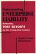

Browse
other Author lists:
A B C
D E F
G H I
J K L
M N O
P Q R
S T U
V W X
Y Z |
 |
El
Salvador in the Eighties
Counterinsurgency and Revolution
Ucl�s,
Mario Lungo, introduction by Arthur Schmidt, translated by Amelia
F. Shogan
256 pp • 5.5x8.25 • Spring 1996
paper 978-1-56639-432-1
cloth 978-1-56639-431-4 |
 |
Technological
Change and Co-Determination in Sweden
Sandberg,
�ke with Gunnar Broms Arne Grip Lars Sundstrom Jesper Steen
and Peter Ullmark, foreword by Andrew Martin
360 pp • 6x9 • Spring 1992
cloth 978-0-87722-918-6
Excerpt available |

|
Surviving
Mexico's Dirty War
A Political Prisoner's Memoir
Ulloa Bornemann, Alberto, edited by Arthur Schmidt and Aurora
Camacho de Schmidt
232 pp • 6x9 • Fall 2006
paper 978-1-59213-423-6
cloth 978-1-59213-422-9
Excerpt available |

|
Men Can
The Changing Image and Reality of Fatherhood in America
Unger, Donald N. S.
240 pp • 5.5x8.25 • Spring 2010
cloth 978-1-43990-000-0
Excerpt available |
 |
Women
and Gender
A Feminist Psychology
Unger,
Rhoda and Mary Crawford
549 pp • Fall 1991
cloth 978-0-87722-897-4 |
 |
But
Still, Like Air, I'll Rise
New Asian American Plays
edited
by Houston, Velina Hasu, foreword by Roberta Uno
520 pp • 6x9 • Spring 1997
paper 978-1-56639-538-0
cloth 978-1-56639-537-3
Excerpt available |
 |
Philadelphia Mural Arts @ 30
edited by Golden, Jane and David Updike
208 pp • 10x8 • Spring 2014
cloth 978-1-4399-1131-0 |
|
Documents
of American Constitutional and Legal History
Vol 1: From Settlement through Reconstruction
Vol 2: The Age of Industrialzation to the Present
edited
by Urofsky, Melvin I.
560 pp • Spring 1989
paper 978- 0-87722-624-6
cloth 978-0-87722-623-9 |
|  |
Understanding
Enterprise Liability
Rethinking Tort Reform for the Twenty-First Century
Nolan,
Virginia and Edmund Ursin
272 pp • 5.5x8.25 • Fall 1994
cloth 978-1-56639-230-3 |